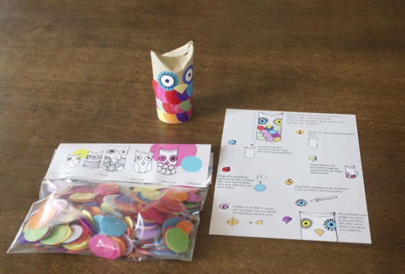
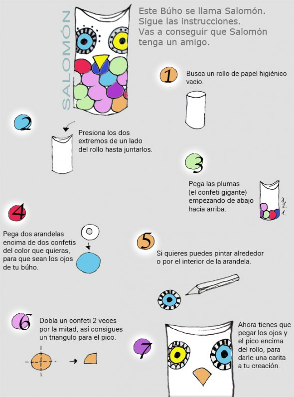

Wir versuchen immer Sachen zu basteln, die man leicht nachmachen kann. Wir haben Anleitung für xanelachic, die ein sehr schönes Blog mit einem kreativen Team hat.
So haben wir Solomon, der einen Freund braucht, Anleitung, Konfetti und Verstärkungsringe , geschickt.

